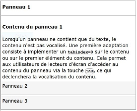

Ce composant permet d'implémenter des contenus en accordéon : le contenu de chaque panneau est affiché lorsque le titre du panneau est activé.
Restitution
- Chaque panneau doit posséder un nom accessible (ressource en anglais).
- le panneau actif et sa position dans la liste des panneaux doit être vocalisé.
- l'état affiché d'un panneau doit être vocalisé.
- le contenu de chaque panneau est vocalisé automatiquement ou sur action de l'utilisateur lorsqu'il interagit avec le contenu.
Interactions de base au clavier
Les interactions au clavier sont :
- Sur le titre d'un panneau, les touches Espace et Entrée affichent ou ferment le panneau associé.
- Les flèches haut ou droite permettent de sélectionner le panneau précédent.
- Les flèches bas ou gauche permettent de sélectionner le panneau suivant.
- La touche Majuscule + Tabulation permet d'atteindre le premier titre de panneau affiché et les éléments interactifs du ou des panneaux affichés dans l'ordre de la séquence de tabulation (en avant ou en arrière).
Motif de conception : Accordion (WAI-ARIA Authoring Practices 1.1)